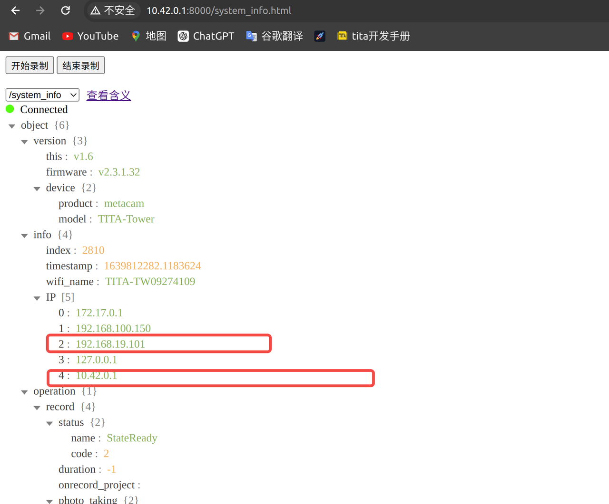
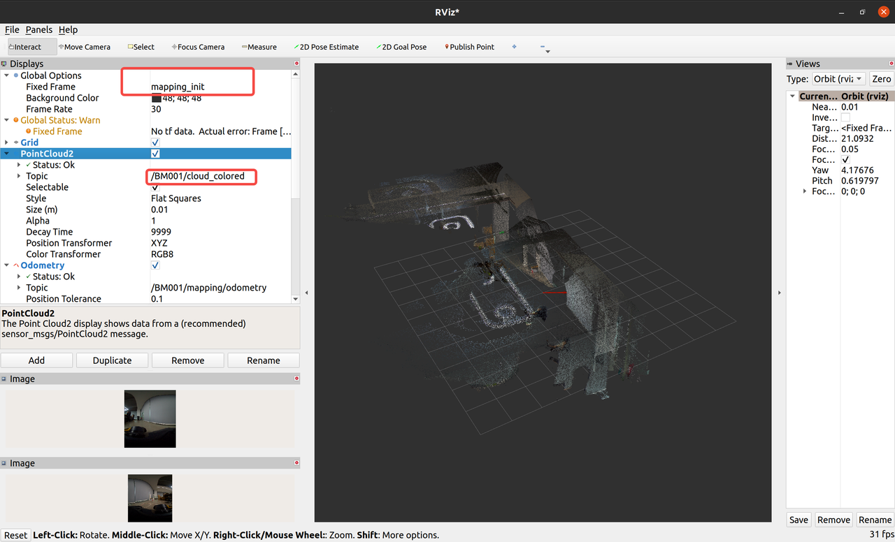

TITA Tower Manual
1. Quick Start
1.1 Preparation work
Before using the TITA Tower, the following preparations are needed：
Install the Power Supply The TITA Tower is powered through its own DB25 external interface, and an officially certified DB25 connection cable is required.
Warning: Hot plugging is not recommended on DB25 interface, which may cause abnormal power loss in the TITA TowerDebug TITA Tower supports Ethernet as well as multi-machine interactive debugging. Pleasse connect TITA Tower to your laptop via an Ethernet cable.
Check IP You can access the device information Web: http://10.42.0.1:8000 by connecting to the TITA Tower’s hotspot. 
注意：
192.168.19.101//The IP address assigned to the wired network port.10.42.0.1//The IP address assigned to the wireless WiFi network.
1.2 Environment Configuration
Normally , TITA Tower ‘s ROS_DOMAIN_ID is 42 .
To achieve multi-machine interaction , you need set the Debug Machine’s ROS_DOMAIN_ID to 42 , and then soure ~/.bashrc
1.2.1 Test Machine Status
When the TITA Tower is powered on, the working light turns blue , indicating its standby mode.
Open the terminal and use ros2 topic list, you can see the following topics:
2. TITA Tower Software
Start software
bool success
string message
ros2 service call start std_srvs/srv/Trigger "{}"
Stop Software
---
bool success
string message
ros2 service call stop std_srvs/srv/Trigger "{}"
Real-time output
It can provide high-precision odometry information
nav_msgs/msg/Odometry ros2 topic echo mapping/odometry
GPS latitude and longitude information
sensor_msgs/msg/NavSatFix ros2 topic echo gps/gnss_soln
Color PointCloud
sensor_msgs/msg/PointCloud2 ros2 topic echo cloud_colored
Left Camera CompressData
sensor_msgs/msg/CompressedImage ros2 topic echo camera/left/jpeg
Right Camera CompressData
sensor_msgs/msg/CompressedImage ros2 topic echo camera/right/jpeg
Left Camera PreviewData
sensor_msgs/msg/Image ros2 topic echo camera/left/preview
Right Camera PreviewData
sensor_msgs/msg/Image ros2 topic echo camera/right/preview
Start rviz
1 rviz2
